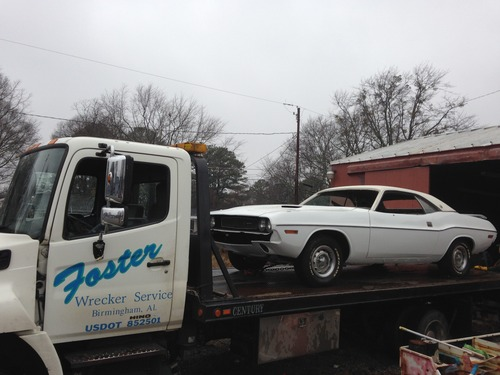
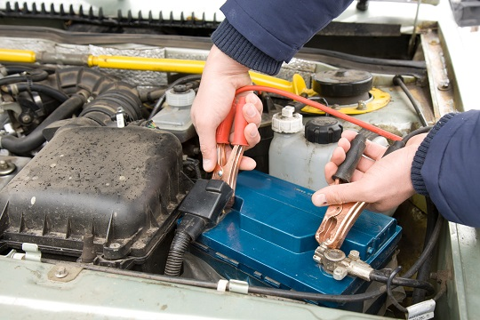
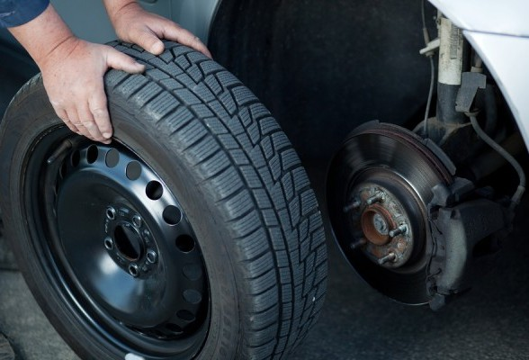

We offer services for:

- Towing
- Winching
- Jump Starts
- Tire Changes
- Roadside Assistance


When you are involved in an accident or stranded just give us a call for all your roadside assistance needs. Our professional and experienced drivers clear accidents every day and know what it takes to get your vehicle off of the road quickly. We will assist in every way possible to help make this experience a little less stressful. Foster Wrecker Service provides towing, roadside assistance, and wrecker services for Center Point, Birmingham, Trussville, and surrounding areas for over 40 years. Foster Wrecker Service is one of the oldest, and most trusted wrecker services in Jefferson County.